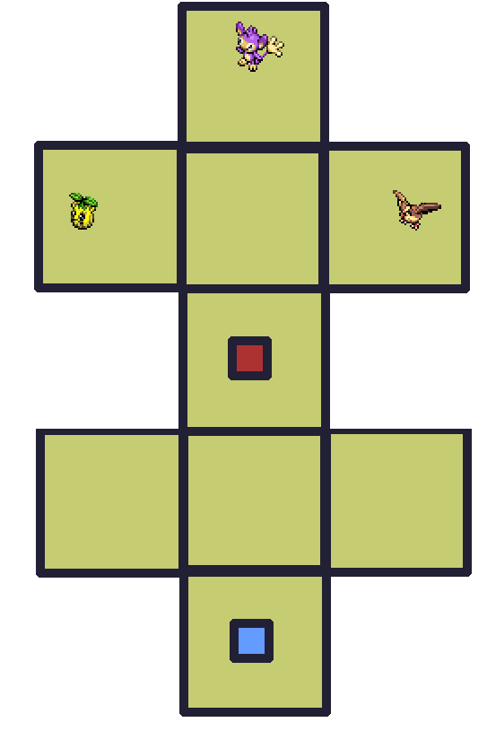

Gauge


Check out WarriorGallade's post on this Mission for more specific tips.
| Rank | AP | Slates |
|---|---|---|
| S | 5 | Totodile (90%) Drapion (10%) |
| A | 4 | Chikorita (100%) |
| B | 3 | N/A |
| C | 2 | N/A |
Wild Pokémon in this Mission do not drop Slates.
| Pokémon | Quantity | Group | Friendship Gauge |
AP | |
|---|---|---|---|---|---|
|
|
Pidgey | 1 | Flying | 64 | 1 |
|
|
Aipom | 1 | Normal | 90 | 1 |
|
|
Sunkern | 1 | Grass | 48 | 1 |
| Pokémon | Group | Friendship Gauge |
Agitated Gauge |
AP | |
|---|---|---|---|---|---|
 |
Drapion | Poison | 300 | 40 | 2 |
Text of this section & map image are taken from WarriorGallade's post on the subject, supplemented with information from the official Prima guide book, and condensed/reorganized slightly. Used with permission.

Legend:
This is a simple stage: only one room and no mazes or traps. The only Pokémon present are Pidgey, Sunkern, and Aipom; capture all three to reach the boss. You'll see the high HP pools and low output damage in action here: at level 1, you deal 10 damage per loop, and will gain roughly +1.2 damage per level gained.
This is an easy first boss. Its attacks are fast and don't linger, giving you time to resume looping, and it won't heal if you keep drawing loops. Like all bosses, it becomes agitated at ~50% HP, cutting Styler damage to 10%. Don't try to brute-force through agitation with loops alone. Use Poké Assists to reduce agitation; a Pokémon whose Assist is super-effective against both the mission's capture targets and the boss is ideal.
Drapion's attacks are:
Achievable on your first attempt, but don't worry if you miss it; gaining just a few Styler levels will make this easier. Save assists for when Drapion is agitated, and watch out for the toxic gas attack!
Only Piplup is available. Use its bubbles to slow Drapion for extra loops, and keep it out of attack range: with no upgrades yet, its assist takes a long time to recharge if it gets hit.